| 日付 | 2020年8月2日（日） - 2020年8月6日（木） | ||||
|---|---|---|---|---|---|
| 山域 | 妙高周辺 | ||||
| メンバー | 家族（妻、長女・9歳、長男・7歳） | ||||
| 山行形態 | 子連れ4泊5日キャンプ | ||||
| アクセス | 車 | ||||
| ルート (Map1) |
|
今年の夏期休暇は秋田旅行に行こうと考え予定を立ててきた。
しかし、東北北部は梅雨明けの気配が見えず、旅行日全てが雨予報になっている。
さすがにこの予報で出かける気にはならず、前日になって急遽目的地を変更。
ぎりぎり梅雨明けした信州北部の飯綱高原に行くことにする。
1日目
目的地を変更したとは言え、決して好天予報ではない今回の旅行。
初日の天気は比較的ましのため、初日に飯縄山に登ることにする。
駐車場にはすでに多くの車が停まっている。標高1125m。
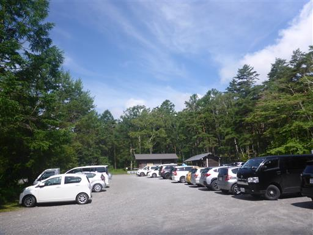
駐車場からしばらく平坦な樹林帯の中の道を歩く。
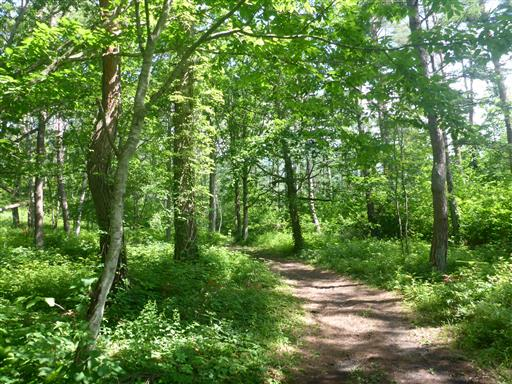
アサギマダラがフラフラと飛んでいる。
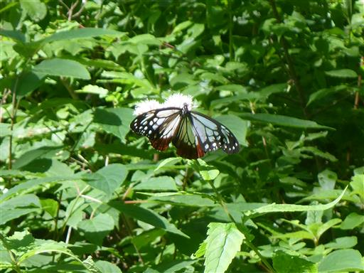
車道に出てくる。登山口までしばらくは車道を歩く。
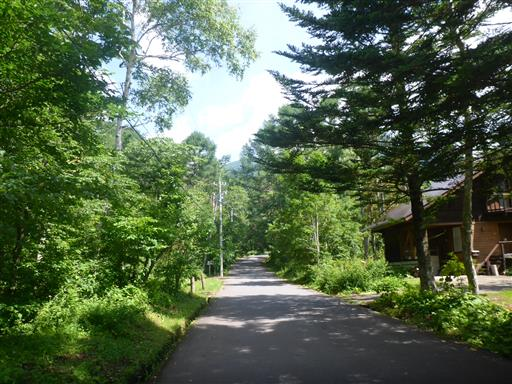
登山道入口に到着。ここにも駐車場があるようだ。

山岳信仰の山なので、登山口に鳥居と狛犬がある。
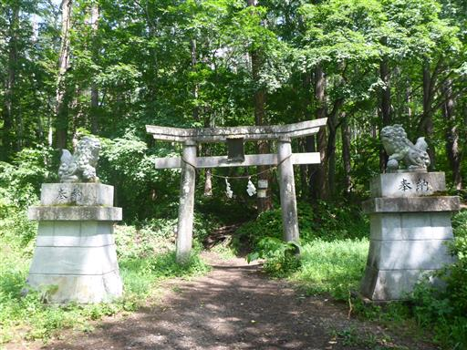
しばらく登ると再び鳥居が出てくる。
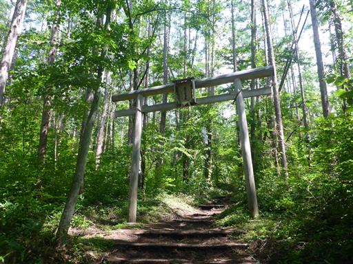
旧奥宮一の鳥居跡地。これまで鳥居があったのに、ここには鳥居がない。
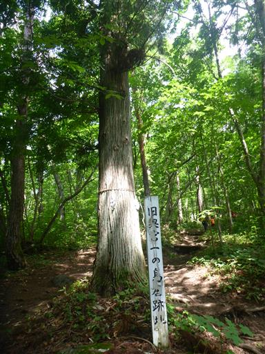
第一不動明王。ここから登山道に沿って十三仏が祀られている。
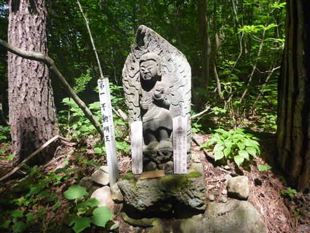
第二釈迦如来。
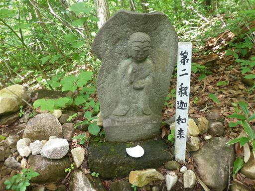
樹林帯の中の登りが続く。気温が高く非常に暑い。
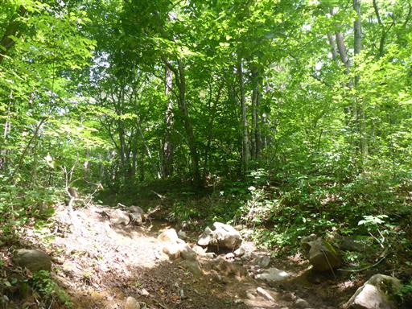
第八観音菩薩に到着。
十三仏が等間隔に並んでいないのと、十三が山頂ではないので、登山の目安としては使えない。
それでも子供たちは次の仏はまだかと探しながら歩いている。
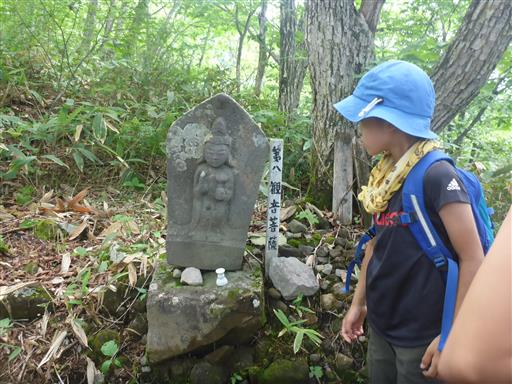
山頂に近づくにつれて、だんだんと登山道は急斜面になってくる。
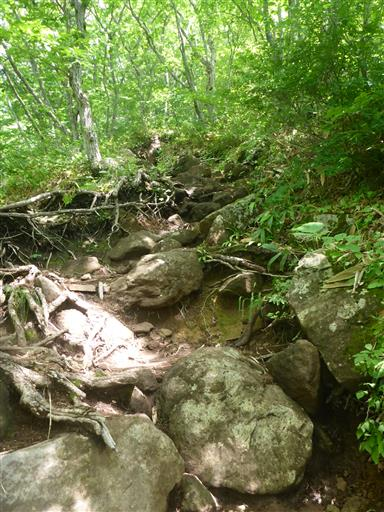
馬頭観音。残念ながらこれは十三仏ではない。
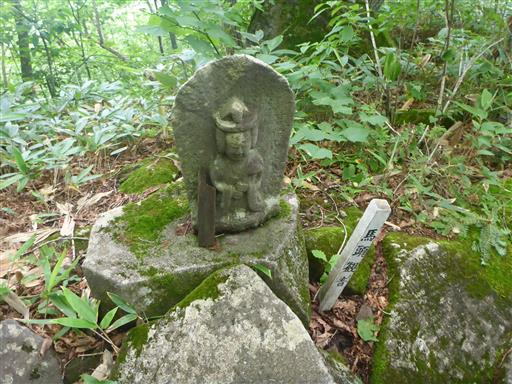
小さな岩場を越える。
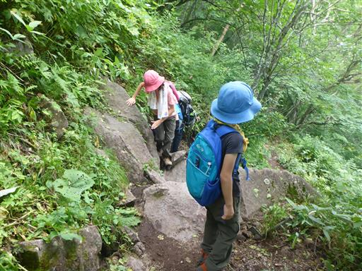
富士見の水場。晴れていればここから富士山が見えるのだろうか？
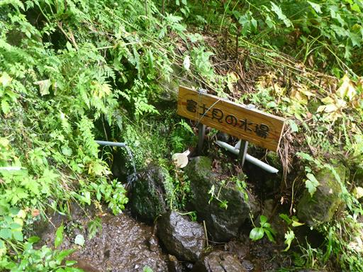
急斜面の登りが続くが、登山道はよく整備されていて歩きやすい。
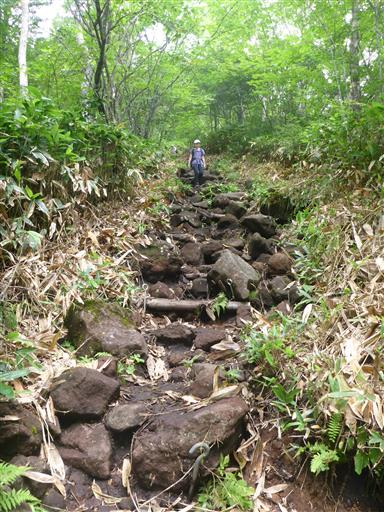
ようやく第十三虚空蔵菩薩に到着する。
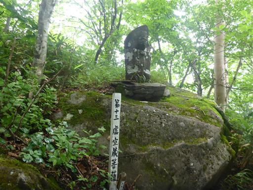
本日初めての大展望が広がる。
そこそこ晴れてはいるのだが、遠くの景色は全て霞の中だ。
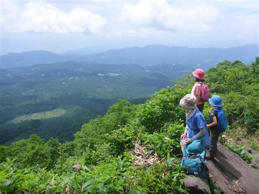
コオニユリ。
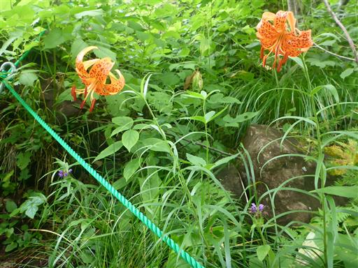
オオバギボウシ。
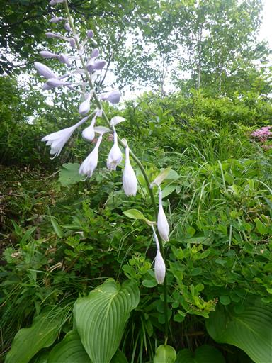
シモツケソウ。この花はあちらこちらで見られる。

ツリガネニンジンだろうか？鐘形の花が可愛らしい。
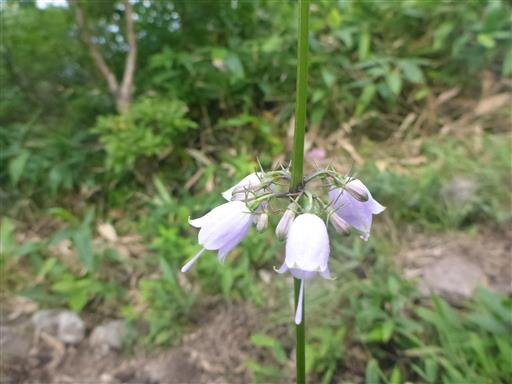
ハクサンフウロ。
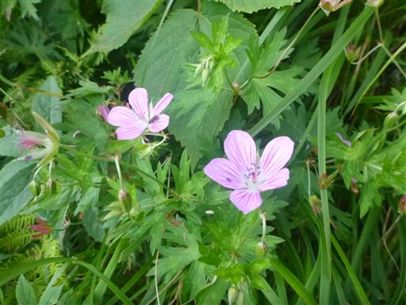
座るのによい岩があったのでちょっと一休み。
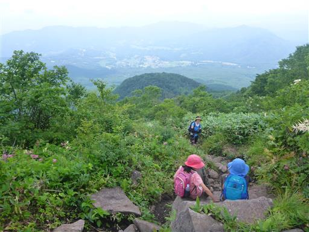
山頂まであともうひと頑張り。
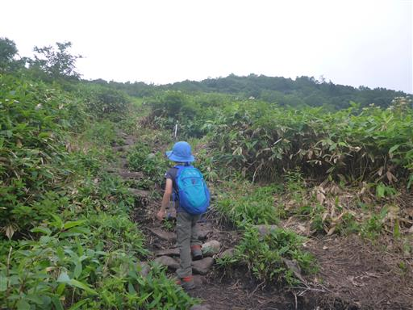
目立つ巨大な葉。マルバダケブキだろうか？
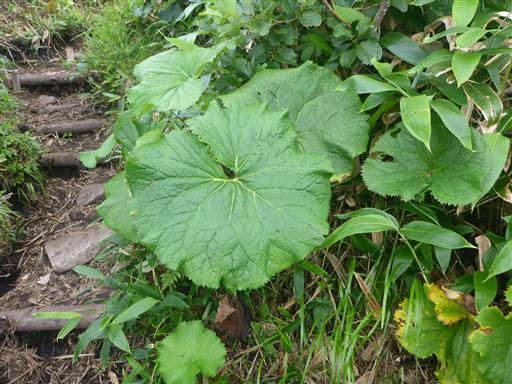
周囲には様々な花が咲き乱れる。
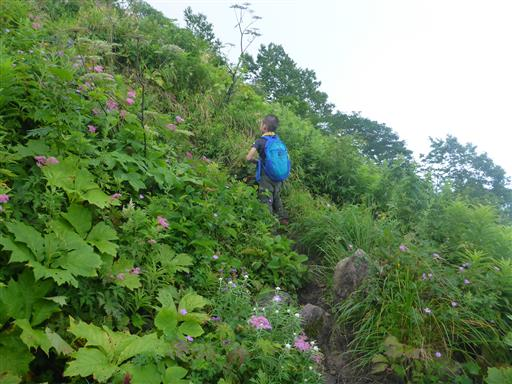
岩に開いた穴から卵を持ったアリが次々と出てくる。
巣の引っ越しだろうか？
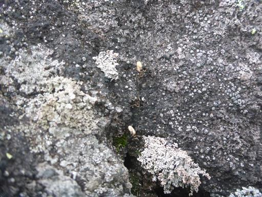
山頂手前のピークにある飯縄神社に到着。
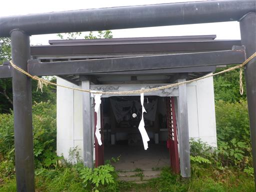
内部はきれいに整備されている。お参りする人は多そうだ。
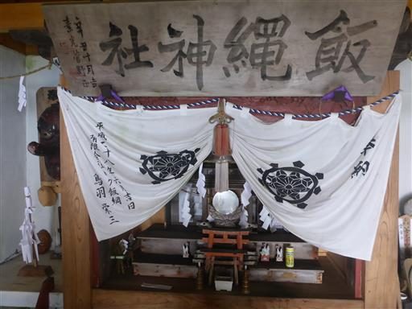
ここから山頂までは緩やかな道を下って登るのみだ。
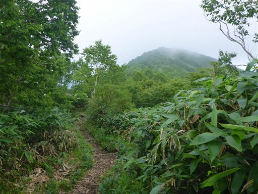
トンボの数が多い。トンボを追いかけながら登って行く。
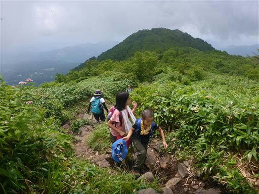
飯縄山山頂に到着。標高1917m。
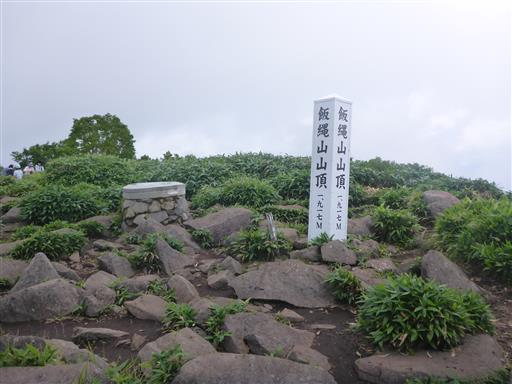
山頂はそこそこの人出だ。
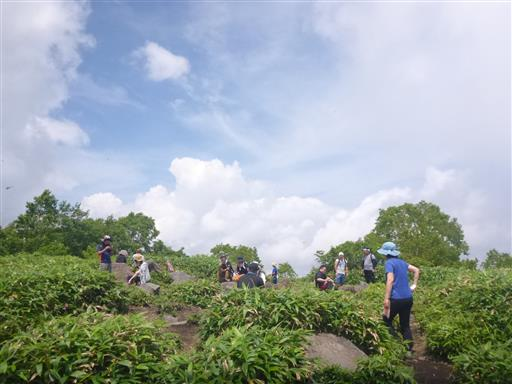
山頂からは広い展望が得られるが、もうほとんど何も見えない。
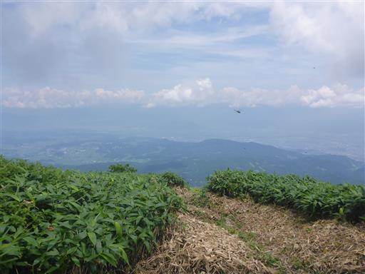
山頂には無数のトンボがいる。あちらこちらトンボだらけだ。
子供達はトンボ捕りに熱中している。
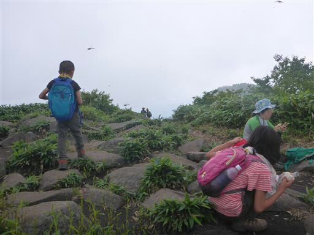
昼食後は元来た道を下山する。
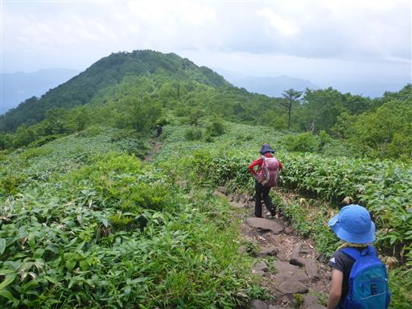
無事駐車場に戻ってくる。
あまり特徴のない山だったが、非常に歩きやすい登山道で子供の姿が多くみられた。
長野市街地から近いので、長野市民に親しまれている山なのだろう。
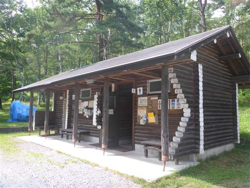
下山後は、これから4泊お世話になる予定の飯綱高原キャンプ場に移動する。
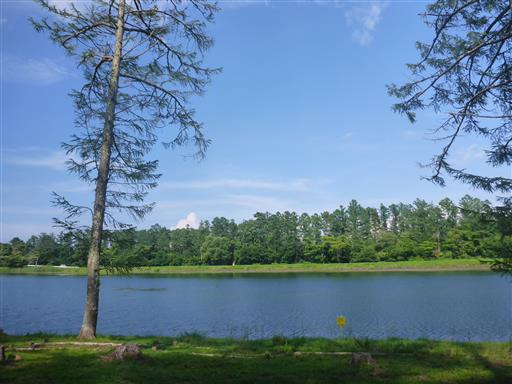
設営。広々としたキャンプ場で気持ち良いが、フラットな場所が少ないのが難点。
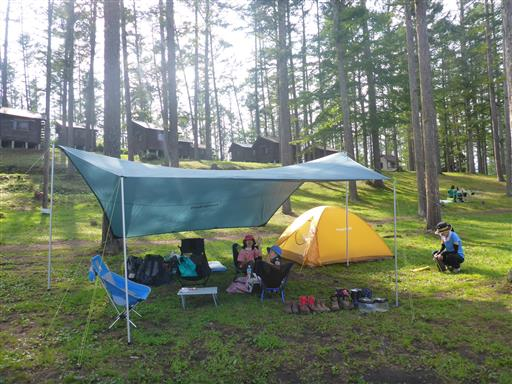
飯縄山の麓にあるキャンプ場だが、飯縄山をすっきり見渡せる場所があまりない。
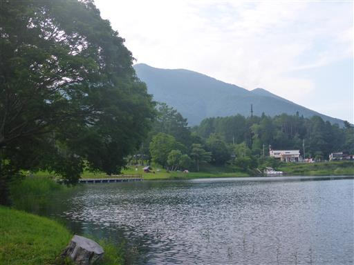
セミの幼虫を発見。その後何匹か幼虫を見かける。セミが多いキャンプ場だ。
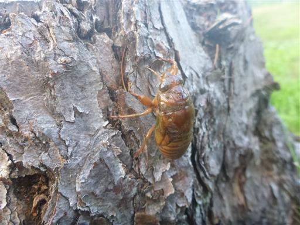
キャンプ場にあるいくつかの遊具で遊ぶ。
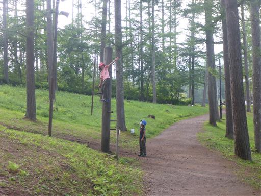
キャンプ場には風呂やシャワーが無いので、近くのむれ温泉 天狗の館に行く。
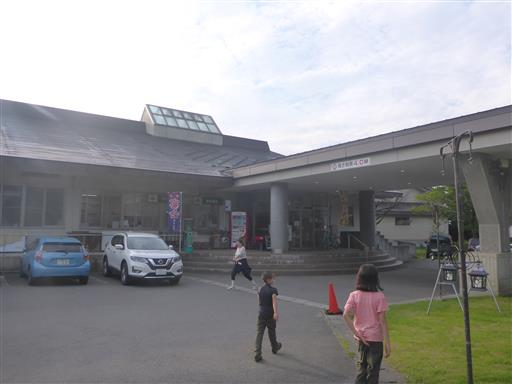
標高が高いからか、この辺りはまだアジサイが満開だ。
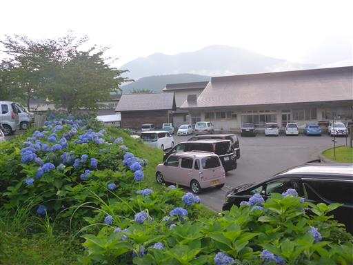
風呂から出た後はスラックラインに初挑戦。
長いベルトだとかなり揺れて、歩くのが非常に難しい。
少し遊んだらキャンプ場に戻る。
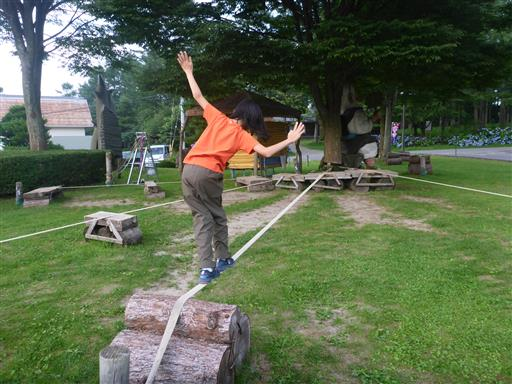